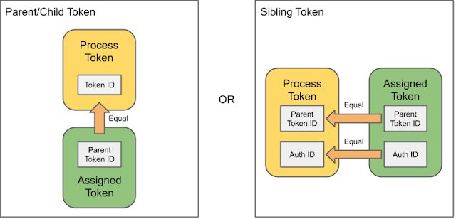
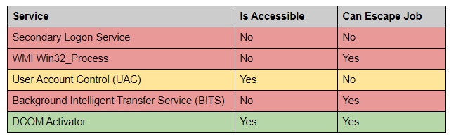
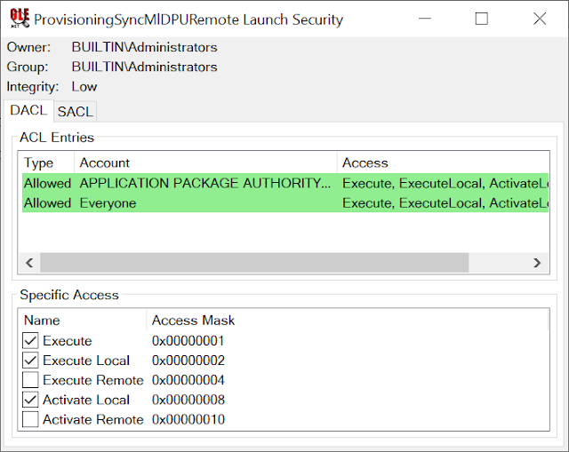
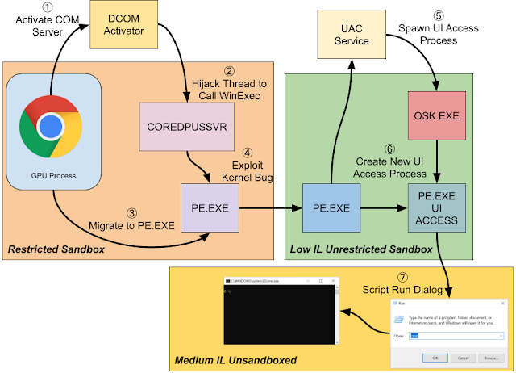

Chrome 沙盒逃逸
条评论2020-6-4
原文链接
一行代码的更改对 Chrome 沙盒的影响
windows上的Chrome沙盒经受住了时间的考验。它被认为是能大规模部署的很好的沙箱机制之一，而且是不需要特权就能运行。
虽然这一切看起来都不错，但还是有缺点。主要的原因是沙盒的实现是依赖于Windows系统的安全性。而windows更新的行为，不受chromium开发团队控制。
如果，windows安全机制出现了bug，那么沙盒就可能被攻破。
这篇文章是关于 win10 1903 上的一个漏洞。
这个漏洞突破了 Chromuim 用来使沙盒安全的一些设计。
将介绍如何使用该 Bug 来开发exp，用来逃逸 Chrome/Edge 上的GPU进程，或者 Firefox 中默认的沙盒。
这个利用的过程也是对 windows 上一些有趣的小问题的探索，尽管这些小问题本身并没有突破安全边界，但能使沙盒逃逸成功。
该洞为2020年4月修复的CVE-2020-0981。
问题背景
在描述这个Bug之前，让我们快速浏览一下Chromium沙盒在Windows上的工作方式。
沙盒通过使用受限的tokens来处理最小特权。受限的token是Win2000中添加的一项功能，可以通过以下操作来修改进程的token，从而减少授予进程的访问权限。
- 永久禁用群组
- 删除特权
- 添加受限制的SID
禁用组会删除token的成员身份，从而导致无法访问由这些组保护的资源。
删除特权可防止进程执行任何不必要的特权操作。
最后，添加受限制的SID会更改安全访问检查过程。要获得对资源的访问权限，我们需要匹配主列表以及受限制SID列表中的组的安全描述符条目。
如果SID列表之中任意一个未授予对资源的访问权限，则访问将被拒绝。
Chromium还使用Vista中添加的完整性级别（IL）功能来进一步限制资源访问。
通过设置较低的IL，无论访问检查的结果如何，我们都可以阻止对更高完整性资源的写访问。
通过这样方式把受限的token和IL结合，沙盒就能限制受破坏的进程可以访问哪些资源，从而限制RCE造成的影响。
阻止写访问尤其重要，因为写操作通常可以使攻击者通过编写文件或注册表项来破坏系统的其他部分。
windows上的任何进程都能使用不同的token创建一个新的进程，比如调用 CreateProcessAsUser。
那是什么阻止了沙盒进程无法使用不受限制的token去创建进程呢。
Windows 和 Chromium 实施了一些安全缓解措施，使在沙盒外部创建新进程变得很困难：
- 1.内核限制非特权用户向新进程分配token的行为。
- 2.沙盒限制了用于新进程的合适token的可用性。
- 3.Chromium 在 job 对象内运行了一个沙盒进程，这个进程可以被任何进程配额限制为1的子进程继承。
- 4.windows 10上，Chromium使用子进程缓解措施来阻止子进程创建。这被应用到前面提到的Job对象之外的其他对象。
所有的环境措施最终都依赖Windwos来确保安全。但是，到目前为止最关键的还是第一点。
即便是第二到第四点都失败，从理论上讲，我们也不应该为新进程分配更多的特权token。那分配token的时候内核应该检查什么？
假设调用过程中没有 SetAssignPrimaryTokenPrivilege ，那么新的 token 必须满足2个条件之一，
该条件已在内核函数 SelsTokenAssignableToProcess 中进行了检查。
条件基于内核中的Token对象结构的指定值，如下图。

总之，token必须是：
- 当前进程的token子级。基于新token的父token ID 等于进程的 token ID。
- 当前进程的token同级。基于父token ID 和身份验证ID字段相同。
当然还进行了其他检查，以确保新的token不是身份级别的模拟token（因为我报告的此bug），
并且新token的IL必选小于或等于当前进程的token。
这些同样重要，但正如我们将看到的那样，在实践中用处不大。
token分配显然不会检查一件事，那就是父token或子token是否受到限制。
如果你处在一个token受限的沙盒中，能否分配一个不受限且通过所有检查的token给子进程让，它成功的逃离沙盒？
不，当然不能。在分配受限的token时，系统会确保同级token检查失败，并且确保 praten/child 检查会强制执行。
如果你跟踪内核函数SepFilterToken，将会了解这是如何实现此功能的。
将现有属性从父级token复制到新的受限token时，将执行以下代码:1
NewToken->ParentTokenId = OldToken->TokenId;
通过设置新的受限token的父级token ID，它可以确保只有创建受限token的进程才能将其用于子对象，因为token ID对应token对象的每个实例都是唯一的。
同时，若更改父级token ID，那么同级检查会被破坏。
但是，当我做一些测试以验证Windows 10 1909上的token分配行为时，我发现有些奇怪。
无论我创建了什么受限token，都无法使分配失败。再次查看SepFilterToken，我发现代码已更改1
NewToken->ParentTokenId = OldToken->ParentTokenId;
现在，内核代码只是直接从旧token中复制父token ID。 这完全破坏了检查，因为新的沙盒进程具有一个被认为是与桌面上任何其他token的同级token。
假设我可以绕过其他已有的3个子进程缓解措施，则这一行更改可能足以突破受限token沙箱。
让我们来看看为此所做的试验和遇到的困难。
Escaping the Sandbox
我想出的最后一个沙盒逃逸程序非常复杂，也不一定是最佳方法。但是，Windows的复杂性意味着很难在我们的链中找到可供利用的替代原语。
首先，我们尝试获取合适的访问tokken以分配给新进程。token需要满足一些条件：
- 1.token是主token或者可转换为主token
- 2.token的IL等于沙盒IL，或者可写，因此可降低IL级别
- 3.token符合兄弟token标准，因此可以进行分配
- 4.token用于当前的控制台会话
- 5.token未沙盒化或沙盒化程度小于当前token
访问token是安全对象，因此，如果您有足够的访问权限，则可以打开token的句柄。 但是，token不是用名称来引用的，而是要打开它，您需要有权访问进程或模拟线程。
我们可以使用Get-AccessibleToken命令，用NtObjectManager PowerShell模块查找可访问token。1
2
3
4
5
6
7
8
PS> $ps = Get-NtProcess -Name "chrome.exe" `
-FilterScript { $_.IsSandboxToken } `
-IgnoreDeadProcess
PS> $ts = Get-AccessibleToken -Processes $ps -CurrentSession `
-AccessRights Duplicate
PS> $ts.Count
101
该脚本获取了我计算机上运行的每个沙盒Chrome进程的句柄（显然首先启动了Chrome），然后使用每个进程的访问令牌来确定我们可以为TOKEN_DUPLICATE访问打开哪些其他令牌。
检查TOKEN_DUPLICATE在新进程中用作令牌的原因是，由于两个进程不能使用同一访问令牌对象，因此我们需要复制令牌。
访问检查考虑了调用进程是否对目标进程具有PROCESS_QUERY_LIMITED_INFORMATION访问权限，这是打开令牌的先决条件。
我们有很多结果，超过100个条目。
但是这个数字是不准确的。最初，我们可以访问的token肯定比当前沙盒化的token更多。
没错，只需要未沙盒化的可访问token。其次，虽然有很多可访问token，但这些很可能少数进程产生的大量可访问token。
将其过滤为仅可访问非沙盒化toekn的Chrome进程命令行。1
2
3
4
5
6
7
8
9
PS> $ts | ? Sandbox -ne $true | `
Sort {$_.TokenInfo.ProcessCommandLine} -Unique | `
Select {$_.TokenInfo.ProcessId},{$_.TokenInfo.ProcessCommandLine}
ProcessId ProcessCommandLine
--------- ----------------------------------
6840 chrome.exe --type=gpu-process ...
13920 chrome.exe --type=utility --service-sandbox-type=audio ...
在所有可能的Chrome进程中，只有GPU进程和Audio Utility进程有权访问非沙盒化token。
因为调用系统服务的局限性，与GPU或音频沙盒相比，要使渲染器进程正常运行，要锁定的东西更多。
这确实意味着，由于大多数RCE发生在 HTML / JS内容中，因此大大降低了RCE逃逸沙盒的可能性。
也就是说确实存在GPU bug， 例如Lokihardt在Pwn2Own 2016上使用的一个错误。
让我们集中讨论逃逸GPU进程沙盒。 由于我没有GPU RCE，因此我将DLL注入进程中以实现逃逸。
这并不像听起来那么简单，一旦GPU进程启动，该进程就被锁定为仅加载Microsoft签名的DLL。
我使用KnownDlls的技巧将DLL加载到内存中(有关完整详细信息，请参阅此博客文章) 。
为了逃离沙盒，需要执行以下操作：
- 1.打开一个不受限制的token。
- 2.复制token以创建新的主token并使token可写。
- 3.删除token的IL以匹配当前token（对于GPU，这是低IL）
- 4.使用新token调用CreateProcessAsUser。
- 5.逃离低IL沙盒。
即便在第一步，也出现了问题。
获取无限制的token最简单的方法是打开父进程的token，也就是chrome浏览器的主进程。
然而，如果查了token列表，会发现GPU进程可访问的token，不包括在Chrome浏览器主进程中。这是为何？
这是有意而为的，因为我在报告该内核bug 后才意识到，GPU沙盒进程可以打开浏览器进程的token。
使用此token，可以创建一个新的受限token，该token将通过同级检查以创建具有更多访问权限的新进程，并可逃离沙盒。
为了缓解这中情况，我修改了对进程token的访问权限，以阻止低IL的进程为TOKEN_DUPLICATE访问方式打开token。
请看HardenTokenIntegerityLevelPolicy。
在这修复之前，你不需要内核中任何漏洞就可逃逸Chrome GPU沙盒，至少是不需要正常的低IL token。
因此，我们无法使用简单的方法，但是可以煎蛋的枚举进程，并找到符合我们标准的进程。
可以通过 NtGetNextProcess 函数来做到，正如上一篇文章 所讲。
打开所有进程进行 PROCESS_QUERY_LIMITED_INFORMATION 方式访问，然后打开token以 TOKEN_DUPLICAT 和 TOKEN_QUERY 方式访问。
然后可以检查一下这个token，确保是不受限制的，在做第二步。
要复制token，调用 DuplicateTokenEx 并请求传递 TOKEN_ALL_ACCESS ，作为所需访问权限的主token。
但是有一个新问题，当我们尝试降低IL时，会从 SetTokenInformation 中返回 ERROR_ACCESS_DENIED 。
这是由于Microsoft在Win 10中添加了沙箱缓解措施，并向后移植到了所有受支持的操作系统(包括Win7)。
以下代码是NtDuplicateToken的摘要，其中已引入缓解措施。1
2
3
4
5
6
7
8
9
10
11
12
13
14
15
16
17
18
19
20
21
22ObReferenceObjectByHandle(TokenHandle, TOKEN_DUPLICATE,
SeTokenObjectType, &Token, &Info);
DWORD RealDesiredAccess = 0;
if (DesiredAccess) {
SeCaptureSubjectContext(&Subject);
if (RtlIsSandboxedToken(Subject.PrimaryToken)
&& RtlIsSandboxedToken(Subject.ClientToken)) {
BOOLEAN IsRestricted;
SepNewTokenAsRestrictedAsProcessToken(Token,
Subject.PrimaryToken, &IsRestricted);
if (Token == Subject.PrimaryToken || IsRestricted)
RealDesiredAccess = DesiredAccess;
else
RealDesiredAccess = DesiredAccess
& (Info.GrantedAccess | TOKEN_READ | TOKEN_EXECUTE);
}
} else {
RealDesiredAccess = Info.GrantedAccess;
}
SepDuplicateToken(Token, &DuplicatedToken, ...)
ObInsertObject(DuplicatedToken, RealDesiredAccess, &Handle);
当您复制 token 时，内核会检查调用方是否已沙盒化。
如果将其沙盒化，则内核将检查要复制的 token 的限制是否小于调用者。
如果限制较少，则代码会将所需的访问权限限制为 TOKEN_READ 和 TOKEN_EXECUTE。
这意味着，如果我们请求诸如 TOKEN_ADJUST_DEFAULT 之类的写访问权限，它将被通过复制调用返回给我们的句柄上删除。
反过来，这将阻止我们减少 IL，以便可以将其分配给新进程。
这看起来我们的漏洞利用链就这样完了。
如果我们无法写入token，则无法降低token的IL，这就会阻止我们对其进行分配。
但是，这实现有一个小缺陷，重复操作将继续完成，并仅返回具有有限访问权限的句柄。
当您创建新的token对象时，默认安全性将授予调用者对该token对象的完全访问权限。
这意味着一旦获得了新token的句柄，就可以调用普通的DuplicateHandle API将其转换为完全可写的句柄。
尚不清楚这是否是有意的，尽管应注意的是，如果新token的限制不那么严格，则CreateRestrictedToken中的类似检查会返回错误。
无论如何，我们都可以滥用此功能来获得可写的不受限制的token，以将其分配给具有正确IL的新进程。
现在我们可以获得一个不受限制的token，我们可以调用CreateProcessAsUser来创建我们的新进程。
但是速度并不快，因为GPU进程任运行在受限制的JOB对象中，这是会阻止新进程的创建。
在将近5年前的In-Console-Able博客文章中， 我详细介绍了Job对象如何阻止新流程的创建。
那么，能在控制台驱动程序中使用相同的bug来逃逸Job对象吗？
在Windows 8.1上，您可能可以（尽管我承认我还没有测试），但是在Windows 10上，有两点使我们无法使用它：
- 1.Microsoft更改了Job对象以支持辅助进程计数器。
如果您拥有SeTcbPrivilege，则可以将一个标志传递给NtCreateUserProcess来在Job内创建一个新进程，该进程不计入进程数。
控制台驱动程序使用它来删除要求，逃离job。 由于我们在沙盒中没有SeTcbPrivilege，因此无法使用此功能。 - 2.Microsoft向token添加了一个新标志以防止将其用于新进程。
Chrome会在所有沙盒进程中设置此标志，以限制新的子进程。
即使没有“1”，该标志也将阻止滥用控制台驱动程序以生成新进程。
这两个功能块的组合，限制了控制台驱动程序在当前作业之外产生了一个新进程。
我们需要想出一种既可以避免Job对象的限制，又可以绕过子进程限制标志的方法。
Job对象是从父对象继承到子对象的，因此，如果我们可以在Job对象之外找到GPU进程可以控制的进程，则可以将该进程用作新的父对象并逃离Job限制。
不幸的是，至少在默认情况下，如果您检查GPU进程可以访问哪些进程，则它只能自行打开。1
2
3
4
5PS> Get-AccessibleProcess -ProcessIds 6804 -AccessRights GenericAll `
| Select-Object ProcessId, Name
ProcessId Name
--------- ----
6804 chrome.exe
但这并不是很有用，不能依靠幸运的进程，而这个进程恰好在运行时既可以访问又不能运行Job。
我们需要做自己的运气。
我注意到的一件事是，在一个很小的竞争条件下，设置了一个新的Chrome沙盒进程。
首先创建该进程，然后应用Job对象。 如果我们可以让Chrome浏览器生成新的GPU进程，则可以在应用Job对象之前将其用作父进程。
GPU进程的处理甚至支持崩溃时重新生成该进程。但是，我找不到在不导致当前GPU进程终止的情况下启动新GPU进程的方法，因此无法使代码运行足够长的时间来利用竞争。
相反，我决定专注于寻找一个RPC服务，该服务将在Job之外创建一个新进程。
有很多RPC服务以进程创建为主要目标，而其他服务则以进程创建为副作用。
例如，我已经在以前的博客文章 中记录了Secondary Logon服务，其中的RPC服务目的是产生新进程。
但是，此想法有一个小缺陷，特别是token中的子进程缓解标志跨模拟边界继承。
由于通常使用模拟token作为新进程的基础，因此任何新进程都会被阻止。
但是，我们有一个未设置标志的非限制token。
我们可以使用非限制token创建一个可以在RPC调用期间模拟的限制token，并且可以绕过子进程缓解标志。
我试图列出可以通过这种方式使用的已知服务，这些服务汇总在下表中：

该表并不详尽，可能还会有其他RPC服务允许创建进程。
从表中可以看到，无法从沙盒级别访问产生辅助进程(例如Secondary Logon Service，WMI和BITS)的众所周知的RPC服务。
UAC服务是可访问的，并且正如我在先前的博客文章 中所描述的那样，存在一种通过滥用调试对象来滥用服务以运行任意特权代码的方法。
不幸的是，当创建一个新的UAC进程时，该服务会将父进程设置为调用方进程。 继承Job对象后，新进程将被阻止。
列表中的最后一个服务是 DCOM Activator。这是负责启动进程外COM服务器的系统服务，可从我们的沙箱级别访问该服务。
它还将所有COM服务器作为服务进程的子级启动，这意味着Job对象不会被继承。
似乎很理想，但是有一个小问题，为了使DCOM Activator有用，我们需要沙盒可以创建进程外COM服务器。
该对象必须满足一组条件：
- 1.服务器的启动安全性将本地激活授予沙盒。
- 2.服务器不得以交互用户身份运行（这会从沙盒中产生）或在服务进程中运行。
- 3.服务器可执行文件必须可以访问受限token。
不必担心第3点，GPU进程可以访问系统可执行文件，因此我们将坚持使用预安装的COM服务器。
创建后是否能够访问COM服务器也无关紧要，我们所需要的只是在Job外部启动COM服务器进程的权限，然后我们就可以劫持它。
可以使用OleViewDotNet 和Select-ComAccess命令找到可访问的COM服务器。1
2
3
4
5
6
7
8
9
10
11
12
13
14
15
16PS> Get-ComDatabase -SetCurrent
PS> Get-ComClass -ServerType LocalServer32 | `
Where-Object RunAs -eq "" | `
Where-Object {$_.AppIdEntry.ServiceName -eq ""} | `
Select-ComAccess -ProcessId 6804 `
-LaunchAccess ActivateLocal -Access 0 | `
Select-Object Clsid, DefaultServerName
Clsid DefaultServerName
----- -----------------
3d5fea35-6973-4d5b-9937-dd8e53482a56 coredpussvr.exe
417976b7-917d-4f1e-8f14-c18fccb0b3a8 coredpussvr.exe
46cb32fa-b5ca-8a3a-62ca-a7023c0496c5 ieframe.dll
4b360c3c-d284-4384-abcc-ef133e1445da ieframe.dll
5bbd58bb-993e-4c17-8af6-3af8e908fca8 ieproxy.dll
d63c23c5-53e6-48d5-adda-a385b6bb9c7b ieframe.dll
在Windows 10的默认安装中，我们有6个候选软件。
请注意，最后4个都在DLL中，但是这些类已注册为在DLL Surrogate中运行，因此仍可以在进程外使用。
我决定选择COREDPUSSVR中的服务器，因为它是唯一的可执行文件，而不是通用的DLLHOST，因此更易于查找。
此COM服务器的启动安全性授予每个人和所有AppContainer程序包本地激活权限，如下所示:

顺便说一句，即使为COREDPUSSVR注册了两个类，该可执行文件实际上也只注册了一个以417976b7开头的类。
创建另一个类将启动服务器可执行文件，但是类创建将挂起，等待一个永远不会出现的类。
要启动服务器，请在模拟子进程缓解标志释放的受限token的同时调用CoCreateInstance。
您还需要传递CLSCTX_ENABLE_CLOAKING来使用模拟token激活服务器，默认值将使用已设置了子进程缓解标志的进程token，因此将阻止进程创建。
这样做，您会发现一个COREDPUSSVR实例在相同的沙箱级别上运行，但是在Job对象之外，没有子进程缓解措施。 成功了吗？
并没有。
通常，新进程的默认安全性基于用于创建新进程的token中的默认DACL。
不幸的是，由于某些不清楚的原因，DCOM激活器在进程上设置了一个明确的DACL，它仅授予对用户，SYSTEM和当前登录SID的访问权限。
即使GPU进程实际上以相同的安全级别运行，也不允许GPU进程打开新的COM服务器进程。
如此接近却又如此遥远。 我尝试了几种方法来使COM服务器(例如Windows Hooks) 内部执行代码，但是没有作用。
幸运的是，进程启动后创建的所有线程仍将使用默认的DACL。
我们可以打开其中一个线程进行完全访问，并使用SetThreadContext
更改线程上下文以重定向执行。
我们需要强制使用这些新线程的线程ID
因为进一步的沙盒会阻止我们使用CreateToolhelp32Snapshot
枚举我们无法直接打开的进程，并且NtGetNextThread API需要父进程句柄，我们也没有。
滥用线程会很痛苦，特别是因为我们无法直接将任何内容写入进程，但至少可以奏效。
将执行重定向到哪里？
为了简便起见，我决定调用WinExec，它将生成一个新进程，并且只需要命令行即可执行。
新进程将具有基于默认DACL的安全性，因此我们可以打开它。 我可以选择其他类似LoadLibrary的方法来加载DLL。
但是，在混乱线程上下文时，可能会导致进程崩溃。我觉得最好是通过尽快步过此过程来避免这种情况。
把什么用作WinExec的命令行？
我们无法在COM服务器进程中直接写入或分配内存，但是我们可以轻松地重新利用二进制文件中现有的字符串来执行。
为了避免找到字符串地址或处理ASLR，我只是选择在DLL的开头使用PE签名，该签名为我们提供了字符串“ PE”。
当传递给WinExec时，当前的PATH环境变量将用于查找要启动的可执行文件。
我们可以将PATH设置为COM服务器中所需的任何内容，因为当以相同的安全级别启动进程时，DCOM激活器将使用调用者的环境。
我们唯一需要做的就是找到一个我们可以写入的目录，这一次我们可以使用Get-AccessibleFile找到一个候选对象，如图所示。1
2
3
4
5
6PS> Get-AccessibleFile -Win32Path "C:\" -Recurse -ProcessIds 6804 `
-DirectoryAccessRights AddFile -CheckMode DirectoriesOnly `
-FormatWin32Path | Select-Object Name
Name
----
C:\ProgramData\Microsoft\DeviceSync
通过设置PATH Environment变量以包含DeviceSync路径并将名为PE.exe的可执行文件复制到该目录，我们可以设置线程上下文并生成一个新的进程，该进程不在Job对象中，并且可以由GPU进程打开。
现在，我们可以利用内核错误，并以低IL运行不受限制的token从新进程调用CreateProcessAsUser。 这将除去低IL以外的所有沙箱。
最后一步是突破“低IL”的问题。同样，有很多方法可以做到这一点，但我决定使用UAC服务。
我本可以用以前博客中记录的调试对象错误，但是我决定滥用UAC的另一个功能。
通过相同的token访问权限，我们在链中使用权限以打开不受限制的token，可以获得UI访问权限。
使我们能够自动化特权用户界面（例如Explorer运行对话框），以在Low IL沙箱外部执行任意代码。
有关此攻击的完整文档，请参见另一篇博客文章。
最终利用过程如下：
- 1.打开一个不受限制的token。
- a.遍历查找进程，直到找到合适的进程token。
- 2.复制token以创建新的主token并使token可写。
- a.复制token只为读
- b.复制句柄以获得写权限
- 3.删除token的IL以匹配当前token。
- 4.使用新token调用CreateProcessAsUser。
- a.创建一个新的受限token以删除子进程缓解标志
- b.将环境块的PATH设置为包含DeviceSync文件夹，然后删除PE.exe文件。
- c.模拟受限token并创建OOP COM服务器。
- d.强制遍历COM服务器进程的ID。
- e.修改线程上下文以调用WinExec，以在内存中传递已知PE签名的地址。
- f.等待创建PE进程。
- 5.逃离低IL沙箱。
- a.生成屏幕键盘的副本并打开其token。
- b.根据打开的token创建具有UI访问权限的新进程。
- c.自动运行对话框以退出低IL沙箱。
图表形式：
